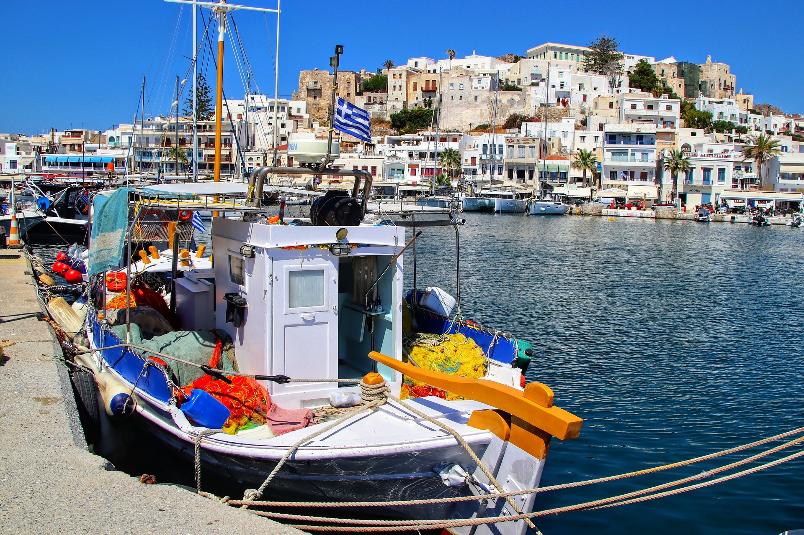
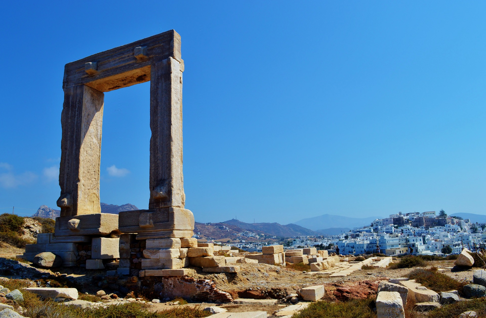

Bienvenue dans l'univers envoûtant des îles grecques, où chaque destination est une histoire à part entière, tissée avec des fils de mythologie, d'histoire et de charme méditerranéen. Préparez-vous à être transporté vers des paradis insulaires uniques.
Santorin : L'Élégance Volcanique
Bienvenue à Santorin, l'île qui incarne l'élégance volcanique. Ses maisons aux volets bleus et aux toits blancs perchées au sommet de falaises offrent des vues à couper le souffle sur la mer Égée. Découvrez les ruelles étroites de Fira et Oia, explorez les vignobles locaux produisant le vin assyrtiko unique, et laissez-vous séduire par les couchers de soleil les plus romantiques au monde.
Plongez dans l'énergie vibrante de Mykonos, l'île qui ne dort jamais. Explorez les ruelles sinueuses de Mykonos Town, où les maisons blanches et les volets colorés créent une toile de fond pittoresque. Détendez-vous sur les plages de Paradise et Super Paradise, puis plongez dans la vie nocturne légendaire de l'île. Mykonos est une invitation à la fête, au luxe décontracté et à la détente sous le soleil égéen.
Explorez Rhodes, l'île qui vous emmène à travers les époques. La vieille ville médiévale de Rhodes, classée au patrimoine mondial de l'UNESCO, vous transporte à l'époque des chevaliers. Perdez-vous dans les ruelles pavées, visitez le palais des Grands Maîtres, puis détendez-vous sur les plages dorées de Lindos. Rhodes offre un mélange unique d'histoire, de culture et de beauté naturelle.
Crète : Mythologie et Nature
Explorez la plus grande des îles grecques, la Crète, où la mythologie rencontre la nature sauvage. Découvrez le légendaire palais de Knossos, randonnez dans les gorges de Samaria, et détendez-vous sur les plages préservées d'Elafonissi. La Crète offre une diversité captivante, de l'histoire ancienne à la beauté naturelle préservée.
Naxos : Authentique et Accueillante
Naxos, la plus grande des Cyclades, séduit par son authenticité et son hospitalité. Explorez ses villages traditionnels, découvrez les anciens temples et détendez-vous sur les plages de sable fin. Naxos offre une escapade paisible où la culture locale prend vie à chaque coin de rue.
Explorez ces îles et bien d'autres, chacune offrant son propre charme et caractère distinct. Que vous recherchiez des couchers de soleil romantiques, des nuits animées, des aventures en plein air ou simplement la paix et la tranquillité, les petites îles grecques ont tout pour plaire.
